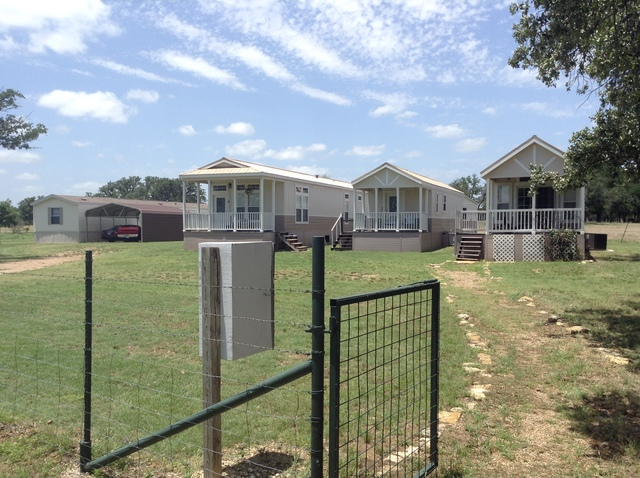
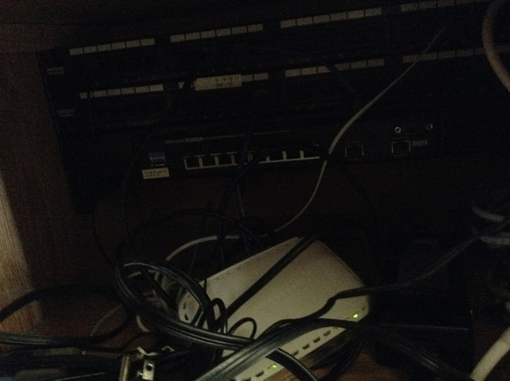

This week began with thunderstorms. Fortunately, thunderstorms bring rain, and we need it here. Unfortunately, thunderstorms bring lightning, and lightning doesn't get along very well with technology, especially when you're hit with a dead-on strike.
And so, I apologize in advance. My week was lots of tech and very little people. If you want to skip to the interesting part, I went to the rodeo this weekend. Just scroll down to the fox, and start there.
I woke up Monday morning (an hour earlier than my alarm) with Loren and Deb (a missionary couple back from Scotland staying with us and learning about film production) knocking at my door. The phones were out down in the more distant reaches of the farm, so it would be great if I could look at that. Also, Loren's computer appears to be dead, and it would be nice if I could look at that, too.
Loren's computer was fairly easy to fix: motherboard's blown, so just plug the hard drive in a different motherboard. The phone problem turned out not only to be a phone problem, though: all internet access was down out there. An entire switch went down in the first home, and so we would need to purchase a new one to get everything back how it used to be. And, as I quickly found out, the wiring for those houses is not documented. And Matt (supervisor) was busy or out of town all week.

On the plus side, we did get internet back to the farthest residence. There's currently a wireless connection between two of the houses because we can't seem to identify the cable running between them, and we don't have phones lines out there yet, but it's a good enough patch job for now. Nevertheless, it was not the way I would have preferred to start the week.

I spent the rest of the week preparing for a phone server update. I've got it almost completely automated by now. Tonight, I'm going to be staying up beside my computer to watch it happen. I effectively just need to be there for disaster relief. This is about what I'll be seeing scroll past my screen for several hours, starting at 11:

I found out that you can use other animals, too, and couldn't resist making these commands.

Speaking of cows, I got to go to the All Around Ranch Rodeo this weekend, which Matt was filming. If you've ever been to a rodeo before, it's not necessarily what you're thinking. Ranch rodeo contenders (teams of five) are actual cowhands on farms, and the ranch rodeo is designed to show off skills they use on a regular basis. While there was still bucking bronc riding, there were also events like sorting and branding. In sorting, the team had to pick three specific cattle out of a herd of 16 without letting any other cattle across the line. In branding, they had to take down a cattle, hold its legs, and then give it a chalk brand. Perhaps the most ridiculous event was the wild cow milking, where the team has to hold a wild cow still long enough to get at least one drop of milk into a bottle.
What really stuck with me is the pride that the cowboys had for their culture. The rodeo opened with a rousing speech about the true American qualities that cowboys expressed in their everyday work, including individuality, freedom, and work ethic. As corny as it may sound to people who aren't from Texas (and possibly to some people who are), the cowboys really take their heritage seriously and I was struck by the genuineness of the whole presentation. You could also tell by the way their children acted how passionate the cowboys were about their lifestyle. Most were dressed in flannel shirts, jeans, and cowboy boots. Kids as young as five were taking turns lassoing PVC pipe horses, dragged by their friends. There was a mini-bronc riding competition for children under ten. Everything the cowboys did, they wanted to instill in the next generation, and it's a very different look at education than the rigorous schooling that is stressed for children elsewhere.
I'll add pictures when I can get them from Matt, because there was some cool stuff there.
Today is Father's Day, and it's frustrating to be away for my second Father's Day in a row. The family just moved down to our new house in town last week, and I wasn't there for it. I've heard it went pretty well, all things considered, but I know it's been stressful for the whole family. But Dad, until I get home, here's a cheesy selfie with a crazy blown-up cliche Father's Day message! Love you, and wish I could be there with you all in the new house!

In the coming week, the farm is going to host a missionary conference. I'm not sure how much real work I'm going to get done, but I'll certainly meet some interesting people with interesting stories. Next project: Set up a proper firewall, with traffic shaping.